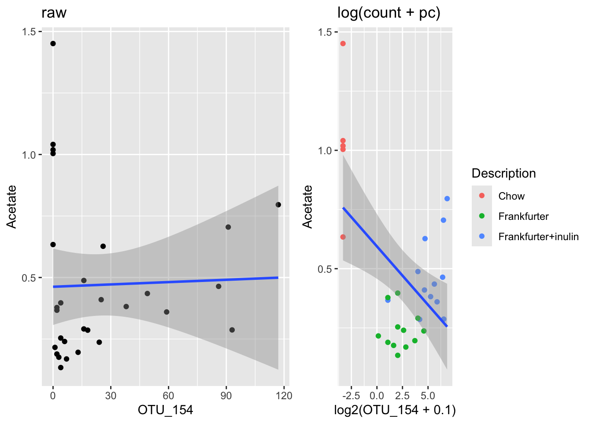

Heatmaps
In order to answer biological questions, often a combination of high-throughput data is generated. Especially in combination with microbiome types of data, the associated metabolome is naturally of interest, as these two sources together reflects who are there and what do they do.
In the analysis of such data a natural starting point is to look for common structure. That is; which types of bacteria are correlated to a certain type of metabolites.
Correlation Heat map
A natural starting point for such an analysis is to produce all pairwise correlations between the OTU table and the metabolite table, and visualize it in a heat map. The build in heatmap() function in R provides a quick initial overview of the data.
Preprocess the data
library(phyloseq)
library(tidyverse)
load('./data/Rats_inulin.RData')
phyXpp <- subset_samples(phyX, !is.na(Acetate))
phyXpp <- filter_taxa(phyXpp, function(x) sum(x>0)>0, TRUE)
phyXpp <- transform_sample_counts(phyXpp, function(x) x/sum(x))
OTUtb <- data.frame(t(otu_table(phyXpp)))
Mtb <- sample_data(phyXpp)[,c("Acetate","Butyrate","Fructose","Glucose","Lactate","Propionate","Xylose")]
# preprocess the Mtb data
Mtb$Xylose <- Mtb$Xylose + 0.141/2 # there is zeros for this one - so to fix log we need to add a bit.
Mtb <- log(Mtb)Pairwise correlations
Compute all pairwise correlations
cr <- cor(OTUtb,Mtb)Visualize
heatmap(cr)
The ordering of the coloumns and rows for this heatmap is based on correlations structure of the correlation matrix. I.e. it is NOT based on similarity of OTUs and metabolites respectively. This might lead to a wrong interpretation. So instead the dendrograms for the rows is based on the correlations of the OTUs and the dendrogram for the coloumns are based on the correlations of the metabolites.
rd<-dist(t(OTUtb))
rc<-hclust(rd)
cd<-dist(t(Mtb))
cc<-hclust(cd)
heatmap(cr, Rowv=as.dendrogram(rc), Colv=as.dendrogram(cc))
1 Exercises
1.1 Heatmaps
Import and run the codes above for generating heatmaps
1.2 Labels
You might want to change the labels for the bacteria to something more intuitive, and furhter export the plot to pdf for zooming. Try to do this and answer whether you see structure in relation to taxonomic level.
Txtb <- data.frame(tax_table(phyX))
colnames(OTUtb) <- Txtb$Rank5 # use Rank5 as labels1.3 Effect of Preprocessing
Try to change the preprocessing such as adding log tranform, and plot histograms of the two versions of the obtained correlations. What do you see?
1.4 A zoom-in!
Digg out OTU_154 and Acetate and plot those against each other. Add log-tranform with a pseudo-count and see what happends. try to add diet info… does that explain anything?
phyXsel <- subset_samples(phyX, !is.na(Acetate))
OTUsel <- data.frame(t(otu_table(phyXsel)))
df <- cbind(sample_data(phyXsel),OTUsel)
g1 <- ggplot(data = df, aes(OTU_154,Acetate)) +
geom_point() + stat_smooth(method = lm) + ggtitle('raw')
g2 <- ggplot(data = df, aes(log2(OTU_154 + 0.1),Acetate, color = Description)) +
geom_point() + stat_smooth(method = lm) + ggtitle('log(count + pc)')
gridExtra::grid.arrange(g1,g2, nrow = 1)
What do you learn from this? … Should be a kinda scarry insight!
Try to color the samples according to intervention group, and see the difference:
g1 <- ggplot(data = df, aes(OTU_154,Acetate)) +
geom_point(aes(color = Description)) + stat_smooth(method = lm) + ggtitle('raw')
g2 <- ggplot(data = df, aes(log2(OTU_154 + 0.1),Acetate)) +
geom_point(aes(color = Description)) + stat_smooth(method = lm) + ggtitle('log(count + pc)')
gridExtra::grid.arrange(g1,g2, nrow = 1)